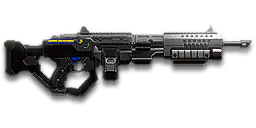

← Back to the NC6S Gauss SAW S comparison
Sage Guide · New Conglomerate · Heavy Assault
The Gauss SAW's versatile little brother: harder-hitting bullets, a faster reload, and the widest attachment rail of any NC LMG. It costs 650 certs — this page teaches you to make them count.
The one-line verdict: a slow-firing hammer that trades fire rate for 200-damage bullets and a 75-round magazine. It rewards good aim and short bursts, and punishes spray-and-pray. Fight between 10 and 40 metres and it will carry you.

The NC6S Gauss SAW S · New Conglomerate · 75-round box magazine
Picture the scene, because you've probably lived it: you're sprinting across a courtyard, an enemy appears, and you do everything at once — hold the trigger down while you're still running, then press aim-down-sights (ADS) a split-second later, finger still down. The sight picture snaps in, it looks precise… and your bullets spray everywhere except the man in your crosshair. He kills you. It feels like the game cheated. It didn't — here's what actually happened.
Three frames of the same half-second. Read left to right.
Frame 1 · Sprint
You sprint — cone maxed at 7.0° before a single shot is fired. Sprinting is the least accurate state in the game.
Frame 2 · ADS, mid-hold
Trigger held, ADS pressed mid-hold. The sight picture snaps in — but aiming does not reset a cone that is already bloomed.
Frame 3 · The spray
Bullets spray around him. Accurate-looking aim, wildly inaccurate gun — and he kills you first.
The whole mystery in one line: the scope gives you a precise picture, not precise bullets. The bullets keep flying out of the wide cone you built while running and hipfiring.
Same half-second, done right. Each beat is short — together they cost less than the fight you just lost.
Beat 1 · Stop
Let go of sprint — and the trigger. Stop, or drop into a strafe. Wait ≈0.3 s for the gun to settle after the sprint.
Beat 2 · Aim
Press ADS and let the sight come up (≈0.15 s). That's fine — your overshield (F) covers the heartbeat it takes.
Beat 3 · Fire
Now fire — from the aimed cone of 0.00°, a perfect first-shot cone. Your first shots land where the dot points, and you control the bloom from zero.
Hipfire works this close: no ADS needed, stopping optional. The standing hipfire ring is only 0.56 m wide at 8 m, so your rounds still find his chest. Just strafe, hold the trigger, and let the overshield do the rest. The three beats above are for mid-range — where the spray actually kills you.
Stop → aim → fire. If you take one habit from this entire page, take this one. You'll practise exactly this rhythm in the simulator in section 04.
You started firing from a sprint, from the hip. Sprinting is the least accurate state in the game: your cone of fire starts at 7.0° — fully bloomed, the widest it can ever be. Every shot you fire from the hip widens it further still (+0.14° per shot).
Then you pressed ADS mid-hold — and nothing reset. Aiming down sights does not shrink a cone of fire that is already bloomed. The scope only gives you a precise picture; the bullets keep flying out of the wide cone you built while running and hipfiring. That's the whole mystery: accurate-looking aim, wildly inaccurate gun.
Two timers stack the deck further: your gun needs about 0.3 s to settle after a sprint, and raising the sight itself takes ~0.15 s. Trigger held through all of it means your first half-second of fire is pure confetti.
1 · Feet. Let go of sprint (and the trigger, if you're already holding it). Stop, or drop into a strafe — anything but a full sprint.
2 · Sight. Press ADS and let the sight come up. This takes a heartbeat — that's fine, your overshield (F) covers it.
3 · Trigger. Now fire. Starting from the aimed cone of 0.00° — a perfect first-shot cone, your first shots land where the dot points, and you control the bloom from zero instead of inheriting a maxed-out cone.
Stop → aim → fire. If you take one habit from this entire page, take this one. You'll practise exactly this rhythm in the simulator in section 04.
Every enemy infantry has 1,000 health (500 shield + 500 health). Your bullet does 200 damage up close, fading to 143 at long range. Headshots count double, leg shots count less (×0.9). That gives you three numbers worth memorising:
| Range | Damage | Head | Chest | Legs | Chest vs shielded Heavy |
|---|---|---|---|---|---|
| Close · 0–10 m | 200 | 3 | 5 | 6 | 8 |
| Mid · 10–54 m | 200→167 | 3 | 6 | 7 | 9 |
| Far · 54–85 m+ | 167→143 | 4 | 7 | 8 | 11 |
Perfect-accuracy times to kill: 3 headshots ≈ 0.25 s, 5 chest shots ≈ 0.50 s up close. In real fights you'll land maybe half your rounds — still, this is why the head matters so much on this gun. And notice the mid band: you keep the 6-shot kill all the way out to 54 m, because your bullets start at 200, not 167.
Full power to 10 m, then a steady slide to minimum at 85 m. The gold line shows Soft Point Ammunition, which stretches full power to 15 m.
One gun, four fighting styles. The right technique changes with distance — use the range finder below to see what your bullets do at any range, then learn the four bands underneath it.
How to fight hereAim down sights at the upper chest and neck. Fire in bursts of 5 — your recoil climbs straight up into the head for free damage.
Aim: centre of the chest, from the hip. Keep moving.
Scoping in costs you time and halves your move speed — at arm's length that gets you killed. The SAW S is clumsier from the hip than the GD-22S (a 4.0° standing cone instead of 3.0°), but at this range the spread ring is still only 0.56 m wide, so your rounds find his chest. Strafe side to side (A/D) while firing so you're hard to track, and let the overshield soak the return fire.
Aim: neck / upper chest. Bursts of 5 rounds.
This is where the gun earns its keep: 200 damage to 10 m, still about 189 at 25 m, mild sideways recoil, and a perfect 0.00° first-shot cone. Start your crosshair at the neck — the natural upward climb walks your shots into the head, and 3 head hits end the fight in a quarter of a second. Strafe while scoped; you're slower, but a moving target still beats a still one.
Aim: chest. Bursts of 5 rounds, pause between them.
Damage is sliding from about 189 toward 167 and your cone of fire blooms if you hold the trigger. Fire a burst, release for a split second to let accuracy reset, fire again. The recoil climbs straight up (0° angle, no sideways bias at all), so pull your mouse gently straight down — no sideways correction needed. Crouch or stand still when you can — both tighten your shots.
Aim: chest. Taps of 3–5 rounds at exposed targets only.
Past 54 m you need 7 chest shots, and your damage keeps sliding to 143 at 85 m — a long, loud advertisement of your position. Take these shots at stationary or fleeing targets, medics reviving, and engineers on turrets. Otherwise, your better play is to close the distance behind cover. Knowing when not to shoot is a skill too.
Your accuracy is decided by two things before skill even enters it: what your body is doing (your stance sets the starting cone of fire) and what your finger is doing (holding the trigger grows that cone with every shot). The SAW S has no fire-mode switch — full-auto only — so "firing modes" are something you do with your finger, not a setting on the gun.
| Stance | Starting cone | What it means for you |
|---|---|---|
| Sprinting | 7.0° | Maxed out — the widest the cone can be. This is the section 01 disaster: never start firing from a sprint. |
| Hipfire, moving | 4.5° | Walking or strafing from the hip. The 0.63 m ring at 8 m in section 05 is this stance drawn out — wider than a torso. |
| Hipfire, standing | 4.0° | Your point-blank default. The 0.56 m ring at 8 m in section 05 is this stance drawn out. |
| Hipfire, crouched | 3.5° | The tightest hipfire you have (4.0° if you crouch-walk). Crouch when holding a doorway from the hip. |
| Aimed (ADS), feet planted | 0.00° | Standing or crouched makes no difference here — a perfect first-shot cone, not just a tight one. This is why section 01's order matters. |
| Aimed (ADS), strafing | 0.40° | Still tight (0.20° if you crouch-walk while aimed), but you move at half speed (0.5×). Strafe between bursts to stay hard to hit; plant your feet during each burst. |
| Mode | How your finger does it | Use it at |
|---|---|---|
| The mag dump | Hold the trigger and don't let go | Point blank only, or suppressing a doorway. Bloom maxes out fast — past ~8 rounds you're spraying, not aiming. Even with 75 rounds, a dump is a waste of most of them. |
| Bursts — the default | Hold for 5 rounds, release ~0.15 s, hold again. 6–8 rounds is fine while you're learning | Almost everything, 8–54 m. Each release resets the cone, so every burst starts at 0.00°. |
| Tap-fire | Short taps of 3–5, or single clicks, with a real pause between | 54 m and out, at exposed or stationary targets. Slow, but every round goes where the dot is. |
Recoil, in numbers: vertical kick 0.45° per shot, but the first shot of a burst kicks 1.65× harder (0.74°); horizontal kick just 0.175° with a 0.60 tolerance and a 0°/0° angle — straight up, never sideways; the cone recovers at 13°/s when you stop firing. In plain words: pull straight down, and the gun does the rest.
A target 30 m away, aiming down sights. Press and hold FIRE (mouse, touch, or hold Space with the button focused) and watch the holes walk wider the longer you hold — that's firing from an ever-growing cone. Release, let the cone reset, fire again. Aim for bursts of 5; 6–8 is tolerable while you're new. This practice window is shared by the whole Sage series: it's driven by a weapon profile plugged into the window — here the SAW S's (476 RPM, 0.00° starting cone, 0.07° bloom per shot, target at 30 m) — and the spread is drawn at true scale from those numbers.
Cone of fire — fills as you hold, empties when you release.
Your bursts will be graded here — green at 5 rounds, tolerable up to 8.
Some things are easier to show than to say. Here's what your bullets actually do: how wide hipfire spreads at 8 metres, what a good burst rhythm looks like, and what the 2x sight really changes. The hands-on version — holding the trigger yourself — is the practice window in section 04.
A full-size target 8 m away — an arm's-length room fight. The rings show where hipfire rounds land around your aim point (the chest). Sizes are drawn to scale from the gun's real cone-of-fire numbers.
Read it this way: the SAW S is clumsier from the hip than the GD-22S — even standing still, the 0.56 m ring is wider than the chest, so edge rounds leak past him at 8 m, and moving it grows to 0.63 m. Crouching tightens it to a 0.49 m ring, and the Laser Sight shrinks the standing ring to 0.37 m. The rings only grow with distance while the man doesn't — past ~10 m that's rounds missing entirely, the exact moment to switch to aiming down sights, where the spread shrinks to a dot. (Ring sizes use the real geometry: spread diameter = 2 × distance × tan(cone ÷ 2).)
Every shot widens your cone of fire ("bloom"). Releasing the trigger for a heartbeat resets it. Same 18 rounds, two very different outcomes:
The target pattern is bursts of about 5 rounds — that's the ideal. Bursts of 6–8 are fine while you're new (call it newbie tolerance). Past that, the bloom (0.07° per shot aimed, 0.14° from the hip) keeps growing with every shot, so the extra bullets mostly decorate the wall behind your enemy instead of hitting him. Short bursts also leave you rounds for the second enemy — with 75 in the magazine you can afford a second burst, not a second mag dump.
No zoom. The target at 35 m is small but the view is wide open — you see the crate, the tower, and the next enemy coming. Fast to aim, nothing blocks your edges. Best inside ~40 m.
Same target, same 35 m — but he looks twice as tall, so placing shots on his chest and head gets much easier. The price: your view narrows to the round window, the crate and tower are gone, and close targets feel fast and huge. Best at 25–54 m.
That's the whole 30-cert decision from section 06 in one picture: 1x for awareness, 2x for precision. Both sights cost 30 certs, so the choice is about the fight, not the wallet — most veterans carry both and swap per base: indoors 1x, open ground 2x.
The SAW S has the widest attachment selection of any NC LMG — 18 attachments across four slots. The catch: unlike the free GD-22S, none of them comes with the gun, and the gun itself costs 650 certs. Everything below is an optional sidegrade, not an upgrade. Buy in the order shown and stop whenever the gun feels right.
A clean red-dot sight with no zoom. Your default choice, and honestly your best all-round option.
Good: everywhere indoors and out to ~40 m — which is most PlanetSide fights.
Bad: picking out targets past 54 m; that's what the 2x is for.
Doubles your view magnification. Same price as the 1x — the choice is about the fight, not the wallet.
Good: open-field bases, tower fights, and your 25–54 m burst game. Swap between 1x and 2x per fight.
Bad: tight indoor rooms — the zoom makes close targets feel fast and huge.
Night-vision sight: enemies glow white against a dark view, and it sees through smoke.
Good: night fights, smoky doorways, spotting infiltrators by their outline.
Bad: daytime and long range — its view is short-ranged and washes out in bright light.
A simple crosshair (Tacti-Eye) or a holographic red dot (LACO) at 3.4x magnification — sniper-style zoom on an automatic LMG.
Good: almost nothing a beginner does — recoil magnifies too, and tunnels your vision.
Bad: any fight inside 30 m, which is where you'll spend your first hundred hours.
A lightweight box housing (TrueShot) or a triple-chevron reticle for bullet drop (Mark IV) at 4x magnification.
Good: almost nothing a beginner does — same story as the 3.4x, only more so.
Bad: any fight inside 30 m, which is where you'll spend your first hundred hours.
A mil-dot reticle at 6x magnification — the most zoom this gun can take, and the least useful for it.
Good: nothing on an LMG that fires 476 RPM — you are not a sniper.
Bad: everything closer than a horizon. Your view becomes a drinking straw.
The SAW S's recoil is already straight up and predictable. Plenty of veterans run this slot empty forever.
Good: your first weeks. Spend certs on your suit and shield first.
Bad: nothing — there's no downside to an empty slot.
Cuts vertical recoil by 30% (0.45° down to about 0.32° per shot). Costs you: hipfire spread grows 15%, and enemies see you on the minimap from 35 m farther away when you fire.
Good: if you mostly aim down sights at mid-range and the upward climb bothers you.
Bad: hipfire builds and sneaky play — you get louder on the map and sloppier from the hip.
Hides your muzzle flash so your own view stays clear at night — but you appear on enemy minimaps from 15 m farther away.
Good: night fights where your own flash blinds you. A comfort pick, nothing more.
Bad: as an early purchase — it changes no fight outcome. Buy it last, if ever.
You vanish from the minimap when firing and your shots are quiet. In exchange, damage starts dropping off 20 m sooner and bullets fly 15% slower (580 → 493 m/s) — harder to lead moving targets.
Good: flanking behind enemy lines, rooftop and tree work, solo play behind the front.
Bad: front-line fighting where everyone already knows where you are — you pay the damage cost for stealth you don't need.
Cuts side-to-side recoil by 25% (0.175° down to about 0.13°). Tiny cost: weapon swap is 0.15 s slower.
Good: the default for aimed, mid-range play — leave it on until you deliberately build for something else.
Bad: nothing meaningful — though the gain is smaller here than on other guns, because the SAW S's horizontal recoil is already the smallest of any NC LMG.
Hipfire accuracy improves by a third (33% tighter cone — the 8 m standing ring shrinks from 0.56 m to 0.37 m). Replaces the Forward Grip — you can't have both.
Good: indoor point-holds and stairwell fights where you hipfire inside 8 m.
Bad: open bases — you give up aimed recoil control for a bonus you rarely use.
The first shot of each burst kicks 60% less — but side-to-side recoil rises 10% on everything.
Good: disciplined burst and tap-fire at 40 m+, where every burst starts fresh. It pays better here than on most guns, because the SAW S's first-shot kick is its worst trait (1.65× the normal 0.45°).
Bad: long mag dumps — the bonus only applies to the first shot of a burst, and you pay the sideways tax on all the rest.
A torch whose beam reveals cloaked infiltrators. Toggle it with the attachment key (X by default).
Good: hunting a stalker infiltrator camping your capture point — sweep corners with it.
Bad: as your everyday rail — it gives zero accuracy help, and the beam advertises your position.
Doubles your magazine from 75 to 150 rounds — more than the base Gauss SAW carries. Cost: the weapon takes 20% longer to equip and unequip (800 ms → 960 ms), and it occupies the rail slot, so no grip or laser while it's on.
Good: holding a point room, suppressing a lane, or any fight where the 4.24 s reload would get you killed. This is the attachment the SAW S exists for.
Bad: duels where you swap weapons a lot — the slower equip time is felt every time you pull the gun out.
Full 200 damage now reaches to 15 m instead of 10 m (the gold line on the chart above). Cost: bullets fly 10% slower (580 → 522 m/s).
Good: nearly always — most duels happen at 10–20 m, exactly where this extends your 5-shot / 3-headshot kill.
Bad: long-range duels against runners, where the slower bullet needs more lead. A small price.
Bullets fly 10% faster (580 → 638 m/s) and minimum damage stretches 20 m farther out — but full damage now ends at 8 m instead of 10 m.
Good: open-field lanes and long sightlines, where faster bullets mean less lead on moving targets.
Bad: close fights — inside 8–10 m you lose the 5-shot kill, the whole reason this gun hits so hard.
Every price below includes the 650 certs for the gun itself. Start with the stock gun, add the reflex sight first, and only then pick a rail for the way you like to fight.
650 certs · Day one
What 650 certs buys you. Genuinely good — the 200-damage bullets and the perfect first-shot cone are already in the gun. Learn it on this before spending anything more.
880 certs · Recommended
The best value in this whole guide. Covers every fight from a doorway to a tower courtyard.
880 certs · Point hold
Built to hold a capture point room and suppress a lane without ever hearing the reload click. Swap back to the All-Rounder when you're roaming outdoors.
880 certs · Flanker
No minimap blip, quiet shots, tight hipfire for the kills you take from behind. Weak in a fair fight — so don't take fair fights.
Your overshield (F key) is extra health that only helps if it's on before the bullets arrive. Hear footsteps or expect a corner? Shield up, then peek. A shielded Heavy needs 8 chest shots to drop up close instead of 5 — that gap wins duels.
Headshots deal double damage: 3 kills up close versus 5 to the chest, in 0.25 s instead of 0.50 s. Don't aim at the head directly — aim at the neck and let the gun's natural upward climb carry shots two and three into the skull. It's the single biggest damage upgrade you own, and it's free.
Every shot widens your cone of fire. Holding the trigger past ~8 rounds at range means later bullets fly around your target, not into it. Five rounds is the ideal burst; release the trigger for a heartbeat between bursts — your accuracy resets and your hits per magazine roughly double.
Reloading with even 1 bullet left takes 4.24 s; an empty gun takes 5.02 s — an eternity mid-fight, and nearly twice the GD-22S's reload. Count roughly: after two kills or ~50 rounds, duck behind cover and reload early. Treat the last 15 rounds as your emergency reserve, not your working magazine.
Walk with your crosshair at head height, pointed where an enemy's head will appear — a doorway edge, a corner, stairs. Most beginners lose fights in the half-second spent dragging the crosshair onto target. While firing, tap A/D to strafe: a moving Heavy is dramatically harder to headshot back.
Your damage, accuracy and shield all shine at close-mid range — inside 40 m you're still at 6 shots or fewer to kill. Sprint between cover, use buildings and rocks as stepping stones, and arrive at your range before opening fire. The player who chooses the range usually wins the duel — make it you.
Every gun has a price. Here's where the SAW S pays — and the habit that covers each hole.
476 RPM is a slow fire rate — slower even than the GD-22S's 577. The VS Orion and TR CARV both fire 750 RPM — if you and an enemy Heavy trade chest shots face-to-face, their bullets add up faster than yours. Your 200-damage bullets only partly make up for it: your maximum damage output is 1,587 per second, but up close you still kill in 0.50 s to their 0.48 s.
Play around it: don't trade fairly. Shield first, aim for the neck, and use corners — your per-bullet damage and perfect first-shot cone win fights that start on your terms.
4.24 s with rounds left, 5.02 s on empty — nearly twice the GD-22S's 2.3 s. Every reload is a long window where you can't fight back.
Play around it: burst discipline (habit 3) and early reloads (habit 4) — and remember the Extended Magazine: 150 rounds means half as many reloads in the first place.
Past 85 m you're at 143 damage: 7 chest shots, 11 against a shielded Heavy, with bloom fighting you the whole way. Snipers and battle rifles own that ground.
Play around it: tap-fire at exposed targets only, and spend the rest of the time closing distance. You're a Heavy — the front line is your address.
Vertical recoil is 0.45° per shot, but the first shot of every burst kicks 1.65× as hard — a 0.74° jump before the gun settles into its rhythm. In a long burst your aim walks straight off the top of the target — you'll see this clearly in the VR drill below.
Play around it: pull your mouse straight down while firing — the recoil angle is 0°, so no sideways correction is ever needed. The one mercy: it never walks sideways (just 0.175° of horizontal recoil), and the Angled Forward Grip cuts that first-shot kick by 60% if it keeps biting you.
Like all LMGs, you move at half speed while aiming down sights (0.5x), and the gun takes 0.8 s to swap to — 0.96 s with the Extended Magazine fitted — slow if a fight surprises you with your rocket launcher out.
Play around it: hipfire inside 8 m instead of scoping (that's the Point Hold build's whole idea), and swap weapons behind cover, never in the open.
Open the world map, travel to VR Training, and run these on the target dummies. Five minutes before a play session beats an hour of dying confused.
Aim at a wall 20 m away and empty a full magazine without touching the mouse. Watch the bullet pattern climb straight up — that's your gun's fingerprint, and the first shot jumps hardest. Repeat, this time pulling straight down, until the group stays fist-sized.
Walk the dummy range keeping your crosshair glued to neck height the whole time, snapping to each new target without dipping to the floor or sky. Slow and clean first; speed comes on its own.
At 30–40 m, kill dummies with bursts of 5, releasing the trigger fully between bursts. If a burst goes wide, shorten it. Goal: whole kills without a single wild round.
Pick a dummy, stand 5 m away, and circle it with A/D while hipfiring it down without stopping. This is your point-blank survival skill — the one that fires while your shield and movement do the defending.
Fire exactly 50 rounds, step behind a pillar, reload, repeat. Train your hands to reload early and only in cover until it's automatic — at 4.24 s, a reload in the open is a death sentence, and in real fights you'll do it without thinking, which is the point.